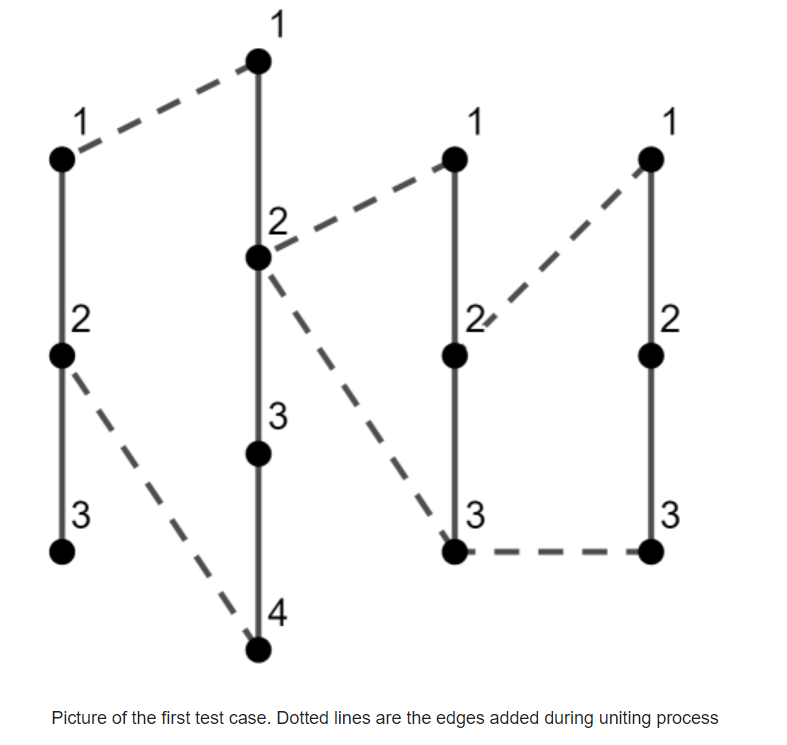
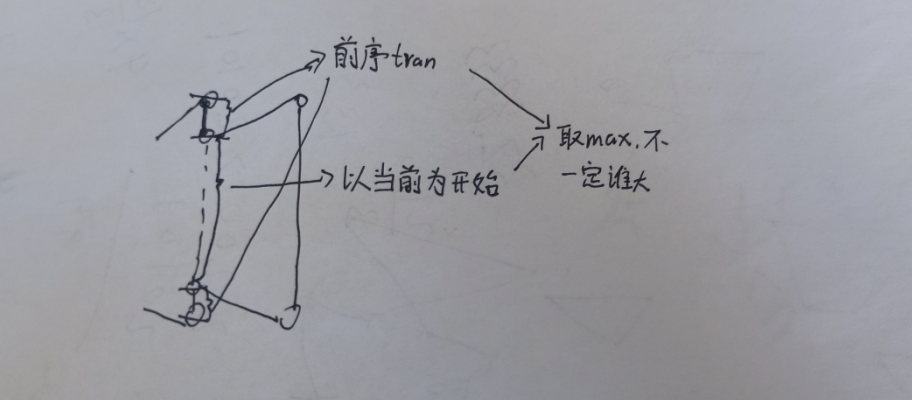

A.K-divisible Sum
题目描述
You are given two integers n and k.
You should create an array of n positive integers ,,…,an such that the sum (++⋯+) is divisible by k and maximum element in a is minimum possible.
What is the minimum possible maximum element in a?
输入
The first line contains a single integer t (1≤t≤1000) — the number of test cases.
The first and only line of each test case contains two integers n and k (1≤n≤; 1≤k≤).
输出
For each test case, print one integer — the minimum possible maximum element in array a such that the sum (+⋯+) is divisible by k.
样例输入
1 | 4 |
样例输出
1 | 5 |
说明
In the first test case n=1, so the array consists of one element a1 and if we make =5 it will be divisible by k=5 and the minimum possible.
In the second test case, we can create array a=[1,2,1,2]. The sum is divisible by k=3 and the maximum is equal to 2.
In the third test case, we can create array a=[1,1,1,1,1,1,1,1]. The sum is divisible by k=8 and the maximum is equal to 1.
题目大意
两个数n，k，给n个数每个数一个值，使得它们的和能够被n整除，求这n个数中最大值的最小值。
思路
首先看到是典型的求最大值最小的题型，可以考虑使用二分来做（实际上并没有用到）。其次，从贪心的角度来说，sum是固定的，因此我们应该尽可能地将数平铺到每一个数上。
之后我们可以通过观察样例看一下能不能得出什么规律。第三个样例非常典型，n==k，则答案是1。
要整除k，我们可以先考虑一下当n大于k时，如果每个数都是1，那么sum一定是大于k的，如果每个数都从1增加到2，那么整个递增的量是n，一定大于k，因此我们一定能够在每个数都是1的前提下让一部分数变成2，使sum变为k的整数倍，因此n大于k时答案最大是2，但是要注意，如果本身n就是k的整数倍，那么每个数都是1即可（我在这里WA了一发）。
可以发现此时就已经讨论完两种情况了，再考虑n小于k的情况。假设每个数平摊下来为m，则最小应有n*m=k，m=k/n。但是此时m可能是小数，考虑到k%n一定小于n，因此如果k%n不等于0，那么余数部分可以均摊到n个数中的某些数中，使得答案增加1变为m+1，简单判断即可。
代码
1 |
|
B.Inflation
题目描述
You have a statistic of price changes for one product represented as an array of n positive integers ,,…,, where is the initial price of the product and is how the price was increased during the i-th month.
Using these price changes you are asked to calculate the inflation coefficients for each month as the ratio of current price increase pi to the price at the start of this month (++⋯+).
Your boss said you clearly that the inflation coefficients must not exceed k %, so you decided to increase some values pi in such a way, that all pi remain integers and the inflation coefficients for each month don’t exceed k %.
You know, that the bigger changes — the more obvious cheating. That’s why you need to minimize the total sum of changes.
What’s the minimum total sum of changes you need to make all inflation coefficients not more than k %?
输入
The first line contains a single integer t (1≤t≤1000) — the number of test cases.
The first line of each test case contains two integers n and k (2≤n≤100; 1≤k≤100) — the length of array p and coefficient k.
The second line of each test case contains n integers ,,…, (1≤≤109) — the array p.
输出
For each test case, print the minimum total sum of changes you need to make all inflation coefficients not more than k %.
样例输入
1 | 2 |
样例输出
1 | 99 |
题目大意
给定一个序列p和一个数k，可以将序列中的某些数增加一些数，使得索引变量i从1开始，满足所有的$$\frac{p_i}{\sum_{j=0}^{i-1}p_j}<=\frac{k}{100}$$，求增加的数的最小总和
思路
不等式已经很明确了，先做个变形，因为不可能去进行浮点运算。
接着我们可以考虑，如果对于，它不满足条件，那么就需要在它之前对于某些数增加一些值，使得可以满足，而在无论在前面哪里增加，都只会让前序不等式更容易达成，因此，完全可以将所有的要增加的值增加给p[0]。
而至于增加多少可以达成目标并且最小，我们发现这是个分界明显的最小值问题。可以考虑二分答案。对于某一个值，把它加到p[0]上面，之后对于后续的p都进行不等式判断，如果都通过，则说明是可行的解，中间有不满足的不等式，则说明不可，可以发现判断条件很容易达成！
最后再看一下复杂度，需要进行次判断，每次判断需要的代价，总的复杂度为，数据量大约在1e6，可以满足要求。
代码
1 |
|
C.Longest Simple Cycle
题目描述
You have n chains, the i-th chain consists of ci vertices. Vertices in each chain are numbered independently from 1 to along the chain. In other words, the i-th chain is the undirected graph with vertices and (−1) edges connecting the j-th and the (j+1)-th vertices for each 1≤j<.
Now you decided to unite chains in one graph in the following way:
- the first chain is skipped;
- the 1-st vertex of the i-th chain is connected by an edge with the ai-th vertex of the (i−1)-th chain;
- the last (-th) vertex of the i-th chain is connected by an edge with the bi-th vertex of the (i−1)-th chain.

Calculate the length of the longest simple cycle in the resulting graph.
A simple cycle is a chain where the first and last vertices are connected as well. If you travel along the simple cycle, each vertex of this cycle will be visited exactly once.
输入
The first line contains a single integer t (1≤t≤1000) — the number of test cases.
The first line of each test case contains the single integer n (2≤n≤105) — the number of chains you have.
The second line of each test case contains n integers ,,…, (2≤≤109) — the number of vertices in the corresponding chains.
The third line of each test case contains n integers ,,…, (=−1; 1≤≤−1).
The fourth line of each test case contains n integers ,,…, (=−1; 1≤≤−1).
Both and are equal to −1, they aren’t used in graph building and given just for index consistency. It’s guaranteed that the sum of n over all test cases doesn’t exceed .
输出
For each test case, print the length of the longest simple cycle.
样例输入
1 | 3 |
样例输出
1 | 7 |
题目大意
n个链条，第i条上c[i]个节点，同时除了第一条以外每个链条的第一个节点与上一个链条的第a[i]个节点相连，最后一个节点与上一个链条的第b[i]个节点相连，问简单回路的最大长度（根据样例来看是按照节点的个数来衡量）
思路
从第一个样例可以观察到，如果当前链条的两个端点连接到了同一个点，那么这个点必是某一个简单回路的开始点。
从第三个样例可以看到，不一定是路径的链条数越多越好，很可能在某个地方就停止了，如果这个链条中间的节点比后续可扩展节点多的话。基于这个思想，我们可以考虑一个dp或者递推的思路来解决。
对于从第二个链条开始，每一个链条都有可能是结束的链条，因此对于每一个链条都以它为结束取一个最大值，其值等于前面能传递过来的最大节点数加上这条链条的节点数。
因此需要维护一个能传递过来的前序最大节点数tran，如果当前这个链条连接下一个链条的节点重合，那么向后传递的tran值置为1，否则，向后传递的tran值等于上一个链条传递过来的tran值加两个连接点到两个端点的距离。但是注意，不只是这一种情况，当前链条向后传递的tran值也有可能是以当前链条为开始链条（即使不是两个连接点重合，当中间区域非常大，比前序tran值大时，则可以取中间部分）

代码
1 |
|